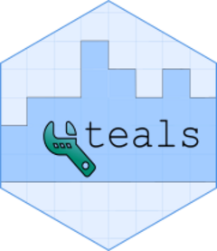

The server part of tm_report_manager().
Source: R/tm_report_manager.R
report_manager_server.RdThe server part of tm_report_manager().

tm_report_manager().R/tm_report_manager.R
report_manager_server.RdThe server part of tm_report_manager().